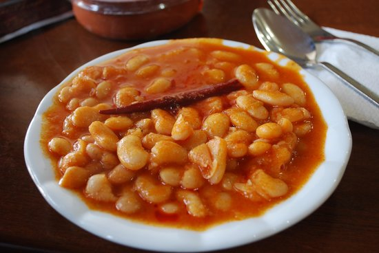

Kuru Fasulye

Description
Kuru fasulye muthis bir yemektir.
Ingredients
- 4 yemek kaşığı zeytinyagi
- 1 orta boy sogan
- 500 gr onceden haslanmis kuru fasulye
- 1 yemek kasigi domates salcasi
- 1 yemek kasigi biber salcasi
- tuz, karabiber vs.
Steps
- Soganlari kavur.
- Fasuyleyi ekle
- falan filan